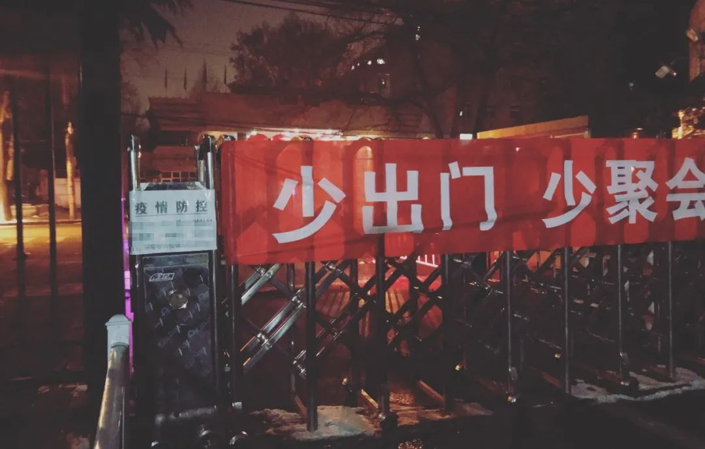
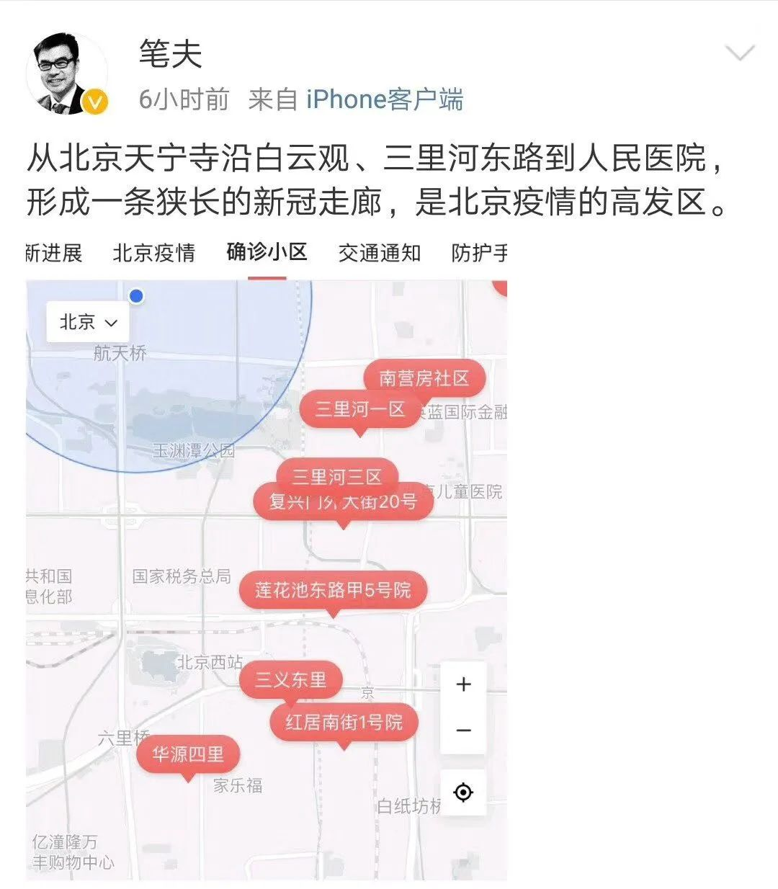
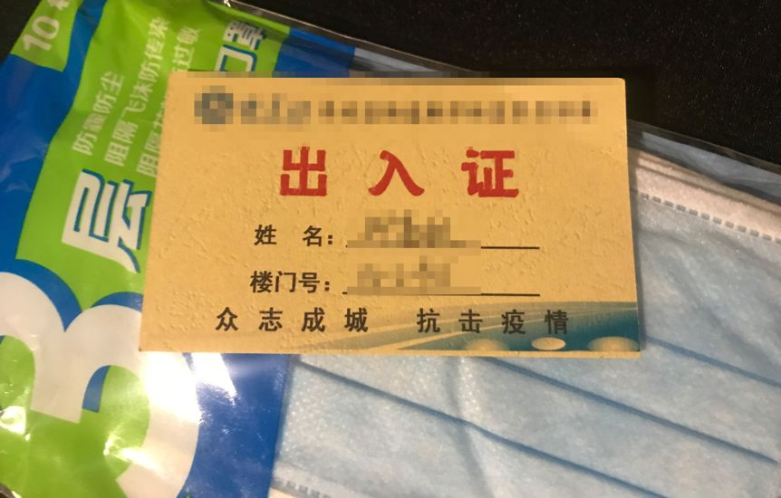
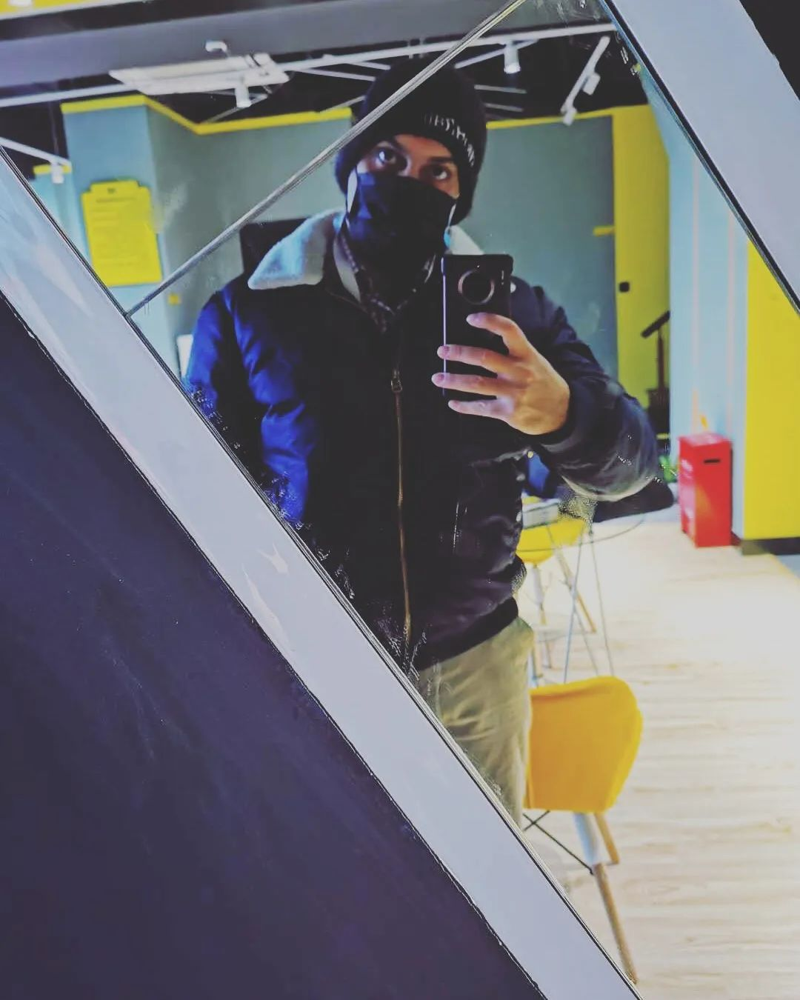
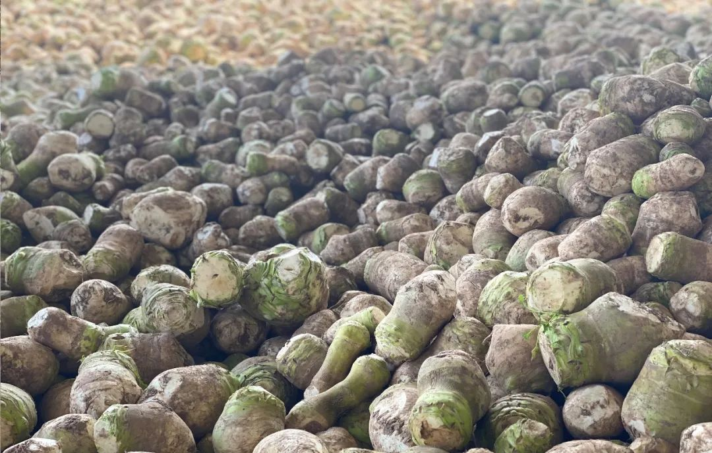
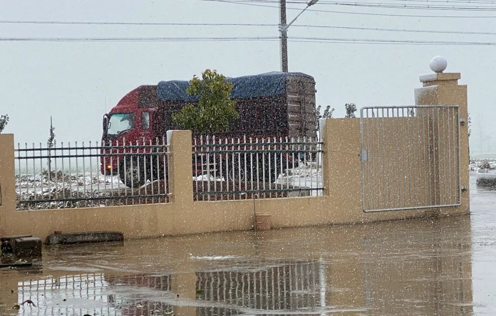
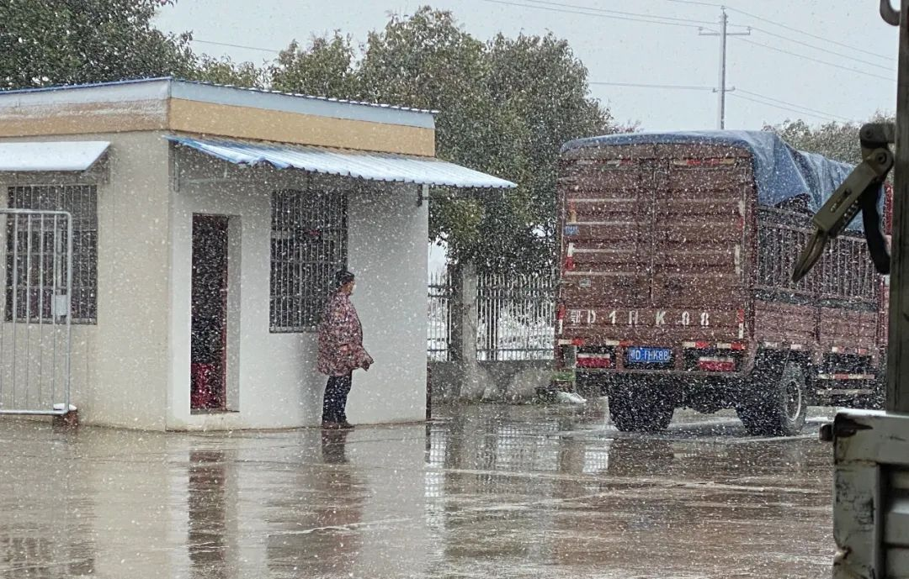
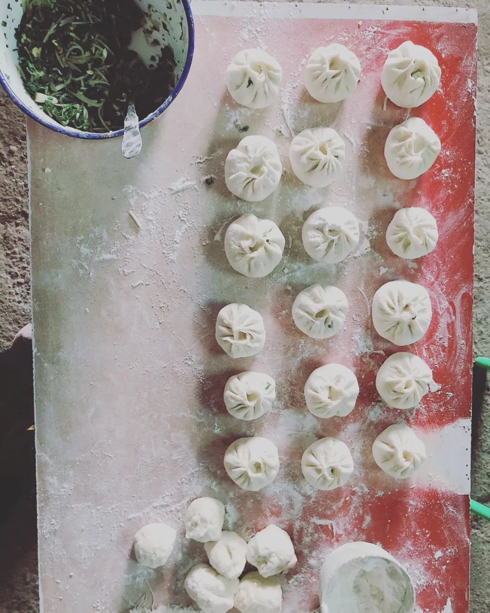

口述实录 | 起初还有点小心思，现在我的小货车已经“停”不下来了
原文链接 备份链接 经过这次疫情，我对《我不是药神》这部电影感触特别深。我明白了平时物资储存的重要性，这样在特殊时期才能派上大用场。 口述 | 赵 勐 整理 | 王仲昀 我叫赵勐，干物流行业的。大年初一下午，我一个人在家睡觉。醒来看到微信 …

这篇文章的作者是我们 之前这篇故事_的主人公，媒体人嘉秋。运送一批物资去武汉之后，他回到北京自动上报，开启了两周的自我隔离。这是他的第二篇隔离记_（第一篇请见这里）。
凌晨四点醒来，窗外月色血红。
一念间回到了五年前那个深夜：盘山路上形单影只一部桑塔纳，从贵州铜仁往湖南古丈疾驰，背后一轮血月升起。
为了给疲劳驾驶的兄弟提神，我转述了民间（封建）传说对此天象的一段解读：“血月当空，兆示人间风云剧变、山河悲鸣”。
那之前，留守贵州毕节的四兄妹喝了农药自杀离世，我们正是为此而入黔。
全部图片来自作者

还记得从湖北回京主动上报的那一天，同为邻里邻居的居委会阿姨毫不嫌弃地把我偷偷拉到一边离近悄悄说，“戴着口罩出来偷偷放风，不碍事的。” 那一刻我觉得，被戴红袖箍的人民队伍罩着，直可九天揽月。
不过，还在犹豫着是否要珍惜这个特权，隔离期已过半，没把寂寞囚住的我再想选择，却已没有了机会 —— 疫情管控不断升级，我所在的社区的三门已封其二，而组织给我的训导也变成了“绝无例外”。这期间，居委会同志还帮我申办了一张隔离完毕后才能起效的出入唯一凭证。

唯一一天夜里无人，我带着手套与口罩，零接触地下楼偷偷走到了封闭的大门。
直到我发现所在的社区正毗邻复兴医院疫情带，方才不再为浪费了特权而遗憾。

北京疫情集中爆发地区图示
而家住疫情带中心高干社区的朋友，对我的平民出入证却表示了羡慕。照她所说，附近几个小区进出无人核查，反映情况后得到的反馈是：街道办认为国管局当管，而物业和保安则认为面对功勋卓著的老干部们，年轻人不当管，也不敢管。
她还说到：“两家医院不正是干部病房出了纰漏，病毒又不认人。人情社会里的特权，在疫情面前绝不是解药”。
看来，我身边的这些红袖箍阿姨，可能才算是人民的侦缉队。基层着实不易，难为重任不容辞。
明尼苏达大学的学生斓熙自发编写了针对疫情创伤应激障碍的心理模型找到我，她的首选对象就是承受着夹板压力、屡受质疑的社区基层工作人员和保安。

我的出入证
闲暇时，我找到几个小区的出入证做了对比，一半以上印有二维码，看来，社区居民信息电子化正从今起步；同时，电信运营商们的短信也在邀请用户们以查询为由，自愿授权公开足迹。

既已失去了放风的机会，单人隔离在家，吃穿住行又缺了一半，到底该如何蹉跎时光？
一位中文名叫大海，来沪十年的巴基斯坦朋友因为签证原因留在上海居家隔离。他选择了把时间尽可能留给健身房来化解身边弥漫的恐惧，“运动会保持健康，免疫力是武器。要记得这句话，‘健康就是财富’。”

不过每一天，公寓楼内的健身房里只有大海一个人
健身圈、普拉提圈和 Switch 的健身环大冒险，在上海年轻人中流行起来。除了健身，在单人隔离期间，唯一一个能够群体聚集进行的 “体育运动”，恐怕就是电子游戏了。
一个知名媒体的总编在连续多日紧张无休后跟我说，他再次下载了王者荣耀狠狠玩了几天以释放紧张情绪。相互安慰下，我更是没有了负担，一举打破了个人最好成绩。而一位在游戏上花费大幅增加的同学和我说：“平时可以靠时间慢慢积累的，如今都想快点得到。以前写着作业，手机可以开着自动模式打副本，现在没什么作业写，也不出去玩，就没法忍耐光看着手机自己打了。”
《电子梦：菲利普·狄克的世界》剧照
虚拟的世界里氪金、嗑药或克服空虚，莫不是因为那让人难以直面的现实？
城市快递网络恢复后，我就没再向 “靳公主” 请过安，完全倚仗了悉心照顾隔离群众的保安大哥人肉连接外来物资。不过，正卧床享受着衣食无忧时，一条发自湖北襄阳农村的朋友圈留言，让我展开了以下对话：

“…附近集市有好几例，都封闭了、断粮了…
…买肉要一星期、白菜多，有的人家不要的，可以吃，去地里捡…
…快递到不了、口罩买不到、卫生巾买不到…”
“…初二到现在没洗澡了、我家房子都露天了，所以不敢洗澡，感冒了咋办…
…有烧过的柴，可以放到火盆里…”
这是地处湖北襄阳农村的一位女生，过年回老家，直至封闭隔离。从发我的一段视频里看，由于老宅年久失修，屋顶来不及铺上瓦，只用黑色毡布一蒙，仰面就是没有星光的暗夜，风声听得真切。
大雪过后，湖北的天气尤其湿冷。住在通透的小房间里，为了防止患上病因难以判断的感冒，女生选择不再洗热水澡，到现在已过了三周；加上缺乏女性卫生用品、食物匮乏营养不足。疫情之下，是名副其实的 “屋漏偏逢连夜雨，船迟又遇打头风”。据她说，如此情形，在这个六百余人的乡里并不少见。
除了人流稠密的中心城市重灾区物资全面紧缺，前方女性医护人员同样缺乏足够的健康保障，湖北各地的农村隔离群体物资匮乏，也正应了我之前写到的那位荆州蔬菜老伯的话。
 大凉山的留守者。 来源：《无可留守》 ，财新
大凉山的留守者。 来源：《无可留守》 ，财新
想起多年前去大凉山调研，当地彝族的女性健康问题严重，与艾滋病和毒品难题交叉，在被轻视和偏见中发展，最终酿成了压垮许多家庭的悲剧。我的编辑 Alexwood 和 GirlsUp 的 Sakura 弄起一个 “萤火计划”，她们筹措了护手霜、卫生巾和安心裤送去武汉，在我的搭档左左协助下，如今第二批物资也发往前方。
由于我们之前的捐助经历，如今团队伙伴们已变成了远程援助咨询和协调的小中心。物资来自天南海北：国内各处、欧洲、澳洲、亚洲和美洲，从女性用品、生活用品、医疗用品，到虚拟的远程心理和社工服务产品。还有十吨罗非鱼片，之前的几家援助物流伙伴们都独力难支，直到左左找到了冷链车。我们在不停的远程工作中发现，那些之前不显现的困难需求，正在被一一顾及，更多的行动者也在一一加入。

我的同学董小姐，是多伦多物资捐助的协调人，运货成了惯性，趁着单位正对我的社区，顺手为我纾困了两袋口粮，跟保安大哥交代，“就是重点隔离的那一个”。
说到蔬菜。
“公公又跑出去了，” 荆州卖菜老伯的儿媳妇，我的师妹，看着院子里堆积如山的榨菜对我说，“刚刚结束隔离，公公就要开工，于是跟婆婆大吵了一架。”
我猜，老伯第二次退群了（前情见这里）。[](https://mp.weixin.qq.com/s?__biz=MjM5NTc1NjYyMA==&mid=2651772564&idx=1&sn=f9d1cf306f3e28de3cef97bbbe124fa4&scene=21#wechat_redirect)

“现在院子外面有一片榨菜的海洋，黄昏时看去，仿佛成了精。” 师妹告诉我。
显然，这位婆婆是真正的一家之主。
首先，她禁止了家庭成员和公公讲话。并非因为负气，而是由于亲戚家发现了疑似案例。另外，在荆州整体新增数字减少的情况下，村里广播喇叭每天却增加了频次反复播放 “不要出门” 的宣传口号。于是，气氛骤然紧张起来。
本来老伯每天自己做饭，虽然粗糙但落得清净。可惜，他忽略了婆婆每次都要把灶台和锅消毒这一拉仇恨的环节。
于是婆婆的第二个举措，就是修订了用餐制度。她把儿子儿媳关在室内，端菜上门；同时取消了老伯的专用餐具，每天将回归了品质的饭菜盛到一次性塑料碗，放在凳子上（作为餐盘）放在门口，一边嘟囔着 “又送了一餐牢饭”，一边后退到很远的地方，大喊一声，“吃饭了！”

在猫粮早早耗光后，老伯家的老猫梦露唯一还吃的罐头也仅剩了两个，快递始终无法通过封锁送达
直到那场大雪，把公公的战斗阵地彻底引回了家中。蔬菜到了时候不收，就会烂在地里面。于是这几天，来往运输的人络绎不绝，婆婆跑前跑后，比公公还要忙碌。
“其他的蔬菜供销社也开始复工了，都是底层的老百姓，该干还得干。” 站在雪地里，老伯对城里来的儿媳妇说。

冒雪来取货的大卡车停在地秤上称重

小师妹后来跟我讲，此前家人持续冷战，直到从《隔离记（一）》里看到大家对老伯的理解和鼓励，一家人才有了个由头打破僵局。“好感谢这个突然出现的变量。”
不过给老伯最大支持的，或许还是那同在一片屋檐下，最可爱的亲人。对了，还有梦露的猫粮，终于在最后一刻送到了。
大海后来告诉我，在行政资源如此紧张的时刻，浦东领馆和雇主还是帮他续上了签证。如今，大海已准备好了回到工作岗位，“做一个工程师该做的事。巴基斯坦人永远和中国人站在一起，加油中国！”
他真这么说的。我能感受到他的真诚，就像我以前在伊斯兰堡的大庙里曾握过的那上百次手一样。要知道，巴基斯坦人民从小学习的课本教材上这样描述：中国是世界上最强大的国家。既然如此，还有什么可怕的呢？
又过了几天，我又翻看襄阳女孩的朋友圈：她用地里挖的野菜，为全家人做了一顿热腾腾的包子，“别看卖相不好，但是再也饿不到了”。

// 作者：邱嘉秋
// 编辑：Alexwood
在这次疫情中，你是否被迫改变了自己的生活习惯，你和周围的人产生了怎样新的关系，你获得了哪些观察和思考？如果你有想法想要分享，请发送电子邮件到 tougao@yishiyise.com，注明 “武汉呼叫”，我们的编辑看到后可能会与你联系。
2019 年年末的时候我们希望每个人都能在 2020 年更脚踏实地一点，而 2020 如此凶猛，当我们都困在这场灾难之中，每一个你身边的故事带来的感受或许都将指向我们的未来。虽然叫 “武汉呼叫”，但疫情影响的是我们所有人。无论你来自哪里，身在哪里，我们都想听到你的故事。


原文链接 备份链接 经过这次疫情，我对《我不是药神》这部电影感触特别深。我明白了平时物资储存的重要性，这样在特殊时期才能派上大用场。 口述 | 赵 勐 整理 | 王仲昀 我叫赵勐，干物流行业的。大年初一下午，我一个人在家睡觉。醒来看到微信 …
原文链接 备份链接 医护人员冲锋在一线有需要，我们国企和其他企业就要一起做好后勤保障工作，挑起企业抗击疫情的责任担当，相信众志成城、共克时艰不是一句空话，大家一起努力，疫情终将过去，一切都会好起来。 口述 | 周 道 整理 | 周 洁 小 …
原文链接 备份链接 做公益，只凭“鸡血”“热情”，这是不行的。 口述 | 周健（北京感恩公益基金会理事长） 整理 | 王煜 这些天以来，许多事情让我非常揪心。 湖南衡山县的乡镇医生宋英杰，连续十几天在抗疫岗位上工作，过劳去世，因公殉职时 …
原文链接 备份链接 总体而言，港人对待疫情，后来就没有内地那么紧张了。我妈妈讲，她觉得作为一个香港居民，自己最大的感受是彷徨。她抱怨道，在香港，没工开等于没饭吃了；公司起先通知放假到24号，何时复工再议，而现在仍然是等通知的状态。 …
原文链接 备份链接 岛语 非常时期，武汉成了全国人民挂念、祈福的城市。封城后，武汉人民的真实生活是什么样？ 武汉在发生哪些变化？ 正和岛自1月26日起特别推出“叶青专栏”。叶青是一位定居武汉40年的市民，也是一名学者和官员。在过往多期的专 …